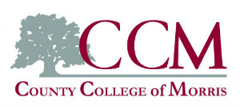

- My College
- 
214 Center Grove Road Randolph, NJ 07869
- My College Career
I decided to go to college and spefically to CCM in the fall semester of 2015 to get an extremely affordable education. This is my first year and so far it has a been challenging yet successful. I am majoring in Computer Science because I've always liked the idea about designing your own application or program. It involves an extensive amount of logical and creative thinking. I plan to finish my associates degree within 2 years and then hopefully go to NJIT or Rutgers NewBrunswick or Rutgers Newark.
- Completed
-
ENG-111. English Composition I
The first half of the 6-credit English Communications requirement emphasizes the fundamentals of written communications including expository prose, reading comprehension and interpretation, and rhetorical modes.
HIS-113. Early Modern EuropeThis course examines the transition from Medieval to Early Modern Europe. Included in the investigation are the Protestant Reformation and ensuing Catholic Counter-Reformation, and the causes and the consequences of the rise of the modern nation-state and the Enlightenment. It also traces the events precipitating the French Revolution and its aftermath.
PSY-113. General PsychologyAn introductory survey of the scientific studies of human behavior on the following topics: human development, physiology, learning, individual differences, motivation, perception, personality, abnormal and social behavior. The course is designed to prepare the student for further study of the broad spectrum of psychology.
SOC-120. Principles of SociologyA comprehensive introduction to the discipline of sociology, examining the basic concepts, e.g., role, status, social structure, research methods, culture, socialization, stratification, norms, values, groups, associations, institutions, community, deviance and society, as well as exploring its foundations and history, and techniques of seeing and understanding the world from a sociological perspective.
MAT-110. College AlgebraAn intensive course designed to prepare students for mathematics courses such as Calculus with Applications to Business and Economics and Precalculus. It covers selected algebra topics including exponents; rational expressions; polynomials, radicals, relations and functions; exponential and logarithmic functions, systems of equations.
- Enrolled
-
CMP-239. The Internet & Web Page Design
This course is an in-depth study of the Internet and its various services that allows students to appreciate the impact of the Internet in society. Students create World Wide Web home pages using strict Hypertext Markup Language, Cascading Style Sheets (CSS) and XHTML. Other current specifications also are discussed.
CMP-128. Computer Science IIn this introductory course, students obtain fundamental computer science knowledge and develop programming skills using an object-oriented approach, incorporating security awareness,human-computer interactions and social responsibility. This course provides students with a basic foundation in computing history, computing careers, computer organization, operating system responsibilities, software development process, algorithm design and analysis, programming paradigms, and human interaction design.
MAT-123. PrecalculusAn intensive one-semester course to prepare students for Analytic Geometry and Calculus, including absolute values; relations; functions; equations; inequalities; polynomial, rational, trigonometric, inverse trigonometric, exponential and logarithmic functions; trigonometric equations and identities; and graphs.
ENG-112. Composition IIThe second half of the English Communications requirement continues emphasis on expository prose and critical writing through the use of literary genres. Methods of literary research and a research paper are required.
- Planned
-
MAT-131. Analytic Geometry and Calculus I
The first semester of a three-semester sequence. Analytic geometry in the plane, differentiation and applications, and integration are covered.
CMP-129. Computer Science IIThis course is the second in a three-course sequence that provides students with a foundation in Computer Science. Students develop intermediate-level programming skills using an object-oriented approach with an emphasis on software development, fundamental algorithms and data structures, software assurance, and ethical conduct.
CMP-233. Data Structures and AlgorithmsThe course includes advanced computer science topics dealing with logical structures of data and the design and analysis of computer algorithms operating on these structures. The course concentrates on data structures such as linked lists, trees, queues, stacks, hash tables and graphs. Algorithms covered include stacks, queues, hash tables, trees, graphs,heaps, sorting and searching. Both iterative and recursive algorithms are explored with analysis of their efficiency. Problems and computer exercises implementing the above structures and techniques are assigned.
CMP-230. Computer Architecture and Assembly LanguageThis course is an introduction to computer architecture and assembly language programming. Topics covered include digital logic and data representation, computer architecture and organization, interfacing and input/output strategies, memory architecture, functional organization, and multiprocessing. Students are exposed to basic assembly language programming techniques in laboratory assignments.